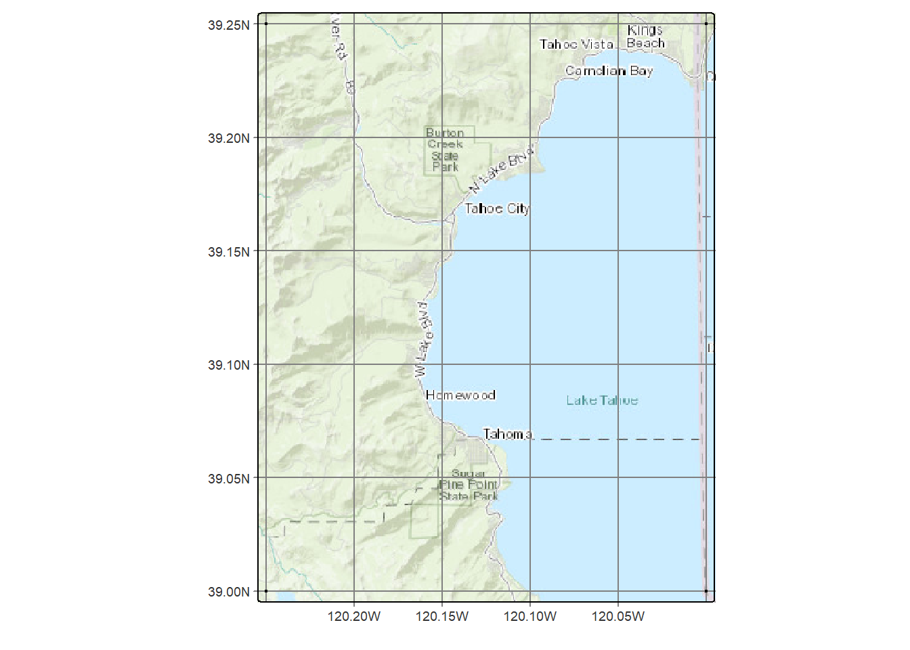
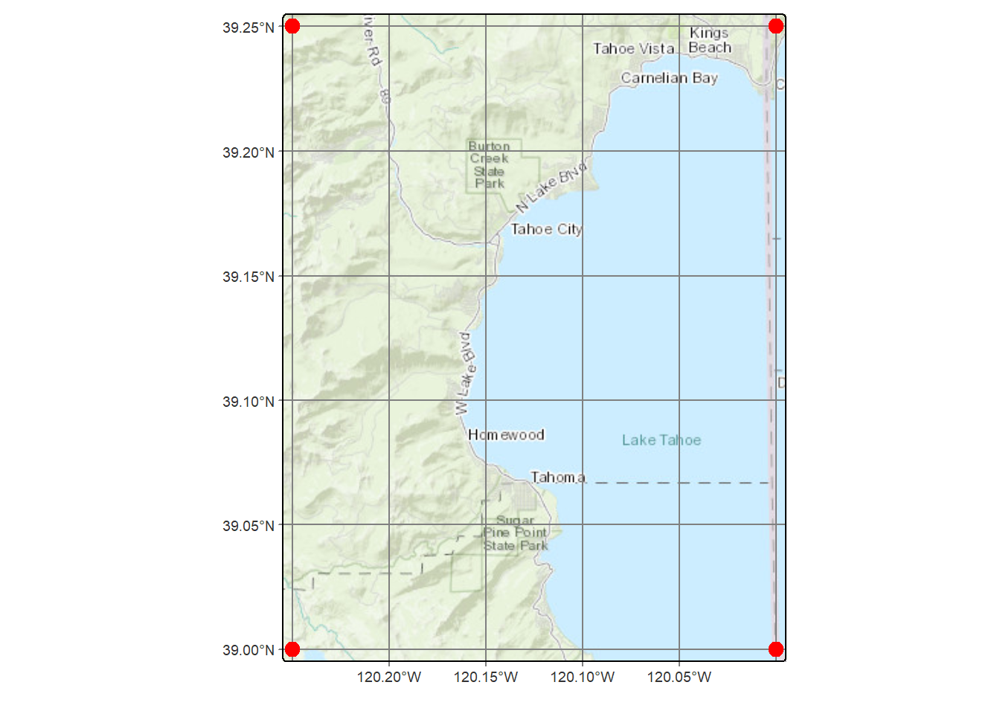
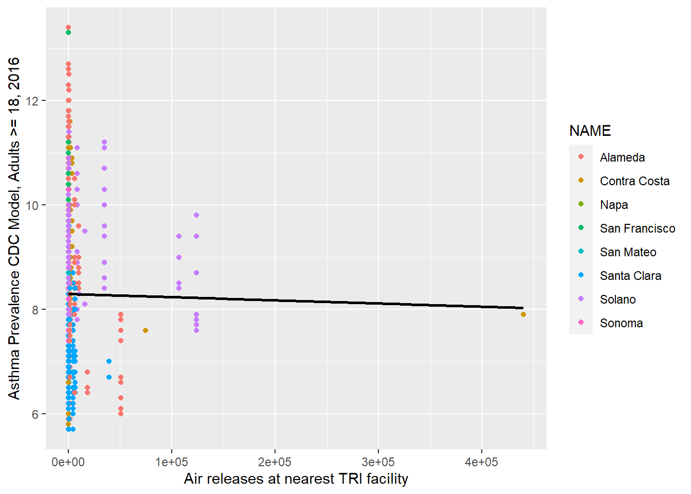
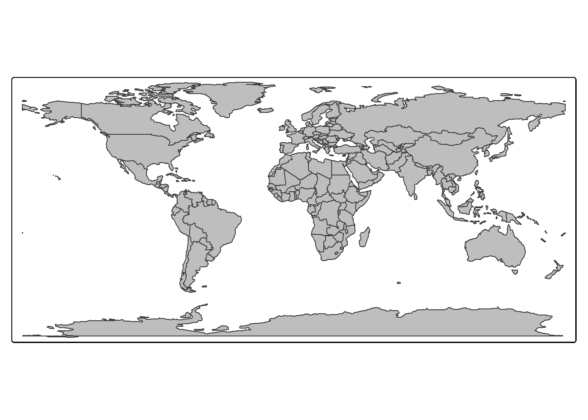
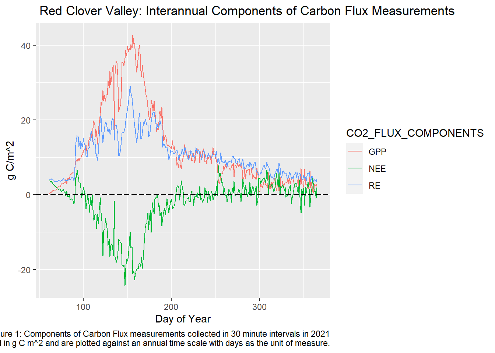
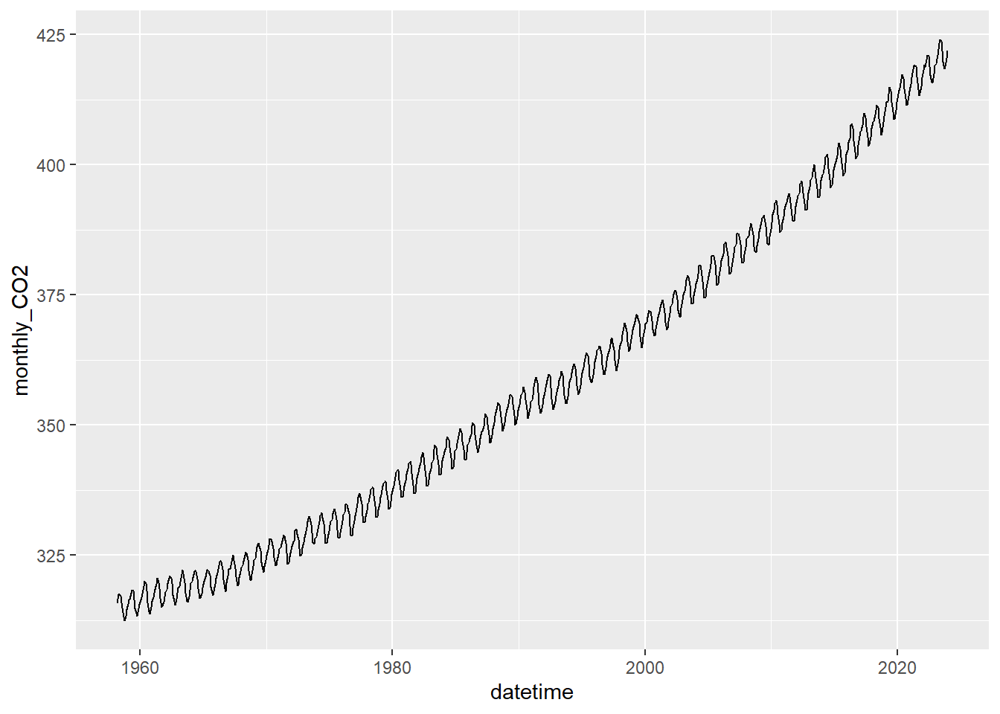

4 tmap4
This chapter explores some features of tmap4 such as visual variables and using a basemap.
Note that the tmap version currently being used in this book (html version) is the development version of tmap version 4, available by using the
remotespackage toinstall_github("r-tmap/tmaptools")andinstall_github("r-tmap/tmap"). See https://github.com/r-tmap/tmap#development-major-update. I’d recommend knittingtmap_vv.Rmd, which you can download from thetmap/vignettesfolder, for a bit of documentation on the visual variables symbology method. The chapter on Making Maps https://r.geocompx.org/adv-map in Geocomputation is probably the most comprehensive source of information.
Note that there are many basemaps served you might explore at https://leaflet-extras.github.io/leaflet-providers/preview/index.html. However, not all are supported by tm_basemap, so they may end up blank. Unfortunately, the various USGS basemaps are currently not supported, but the Esri and Open basemaps are generally reliable.
4.1 Simple test
We’ll start with a simple test of tmap on a basemap, with coordinates of 4 points in the NW part of Lake Tahoe provided in code.
##
## Attaching package: 'tmap'## The following object is masked from 'package:datasets':
##
## rivers## ℹ tmap mode set to "plot".loc = c("nw","ne","sw","se")
lon = c(-120.25, -120.0, -120.25, -120.0)
lat = c(39.25, 39.25, 39.0, 39.0)
df = data.frame(loc,lon,lat)
tahoeNW <- sf::st_as_sf(df, coords = c("lon","lat"), crs=4326)
tm_basemap("Esri.WorldTopoMap") + # USGS.USTopo") + #
tm_graticules() +
tm_shape(tahoeNW) + tm_dots()
Now we’ll add symbology to the points, sticking with simple tm_dots.
## ℹ tmap mode set to "plot".loc = c("nw","ne","sw","se")
lon = c(-120.25, -120.0, -120.25, -120.0)
lat = c(39.25, 39.25, 39.0, 39.0)
df = data.frame(loc,lon,lat)
tahoeNW <- sf::st_as_sf(df, coords = c("lon","lat"), crs=4326)
tm_basemap("Esri.WorldTopoMap") +
tm_graticules() +
tm_shape(tahoeNW) + tm_dots(fill="red", size=0.7)
Now we’ll specify a particular point symbol, using the R shape 21 for a filled circle (google R point symbols to see the 25 shapes).
## ℹ tmap mode set to "plot".loc = c("nw","ne","sw","se")
lon = c(-120.25, -120.0, -120.25, -120.0)
lat = c(39.25, 39.25, 39.0, 39.0)
df = data.frame(loc,lon,lat)
tahoeNW <- sf::st_as_sf(df, coords = c("lon","lat"), crs=4326)
tm_basemap("Esri.WorldTopoMap") +
tm_graticules() +
tm_shape(tahoeNW) + tm_symbols(shape=21, fill="red", size=0.7, col="black")4.2 Visual variables
There are two kinds of variables that tmap4 responds to – transformation variables that changes the display spatial coordinates (such as in a cartogram) and visual variables that change the symbology. Visual variables will be most useful for us, so is the main subject of this chapter.
From a vignette by Martijn Tennekes, we can see the a table of visual variables supported:
| Map layer | Visual variables | Visual constant |
|---|---|---|
tm_basemap() |
none | alpha |
tm_polygons() |
fill (fill color), col (border color), lwd (border line width) lty (border line type), fill_alpha (fill transparency), col_alpha (border color transparency) |
linejoin (line join) and lineend (line end) |
tm_symbols() |
fill (fill color), col (border color), size, shape, lwd (border line width) lty (border line type), fill_alpha fill transparency, col_alpha border color transparency |
linejoin (line join) and lineend (line end) |
tm_lines() |
col (color), lwd (line width) lty (line type), alpha transparency |
linejoin (line join) and lineend (line end) |
tm_raster() |
col (color), alpha (transparency) |
|
tm_text() |
size, col |
4.3 Constant visual variables


## Using a visual variable for feature symbolization
You can create facets by specifying multiple data variable names and scales to one visual (or transformation) variable, in this case "fill". The effect will be a comparison of six symbolization methods using the same variable.
data(World)
Africa = World[World$continent == "Africa", ]
Africa$life_exp = round(Africa$life_exp)
tm_shape(Africa) +
tm_polygons(rep("life_exp", 6),
fill.scale = list(tm_scale_categorical(),
tm_scale_ordinal(),
tm_scale_intervals(),
tm_scale_continuous(),
tm_scale_continuous_log(),
tm_scale_discrete()),
fill.legend = tm_legend(title = "", position = tm_pos_in("left", "top"))) +
tm_layout(panel.labels = c("tm_scale_categorical", "tm_scale_ordinal", "tm_scale_intervals", "tm_scale_continuous", "tm_scale_continuous_log", "tm_scale_discrete"),
inner.margins = c(0.05, 0.4, 0.1, 0.05),
legend.text.size = 0.5)## [plot mode] fit legend/component: Some legend items or map compoments do not
## fit well, and are therefore rescaled.
## ℹ Set the tmap option `component.autoscale = FALSE` to disable rescaling.
4.4 Basemap
Basemaps are very useful for providing context for thematic maps. The tm_basemap function in tmap uses a capability of leaflet interactive maps for this, and makes use of the maptiles package to provide this capability for static (plot mode) maps.
tm_basemap(server="OpenTopoMap", zoom=2) +
tm_shape(World, bbox=sf::st_bbox(c(xmin=-180,xmax=180,ymin=-85,ymax=85))) +
tm_polygons(fill=NA,col="black") +
tm_layout(inner.margins=rep(0,4))## Warning: Current projection unknown. Long lat coordinates (wgs84) assumed.